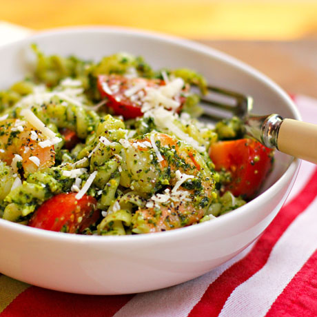

Pesto Shrimp Pasta
The best thing about pasta is that everything can be in one pot if you tried.
Ingredients
- 12 oz. shrimp, peeled and deveined
- 8 oz. angel hair pasta
- 2 tbsp olive oil, divided
- 2 cloves garlic, minced
- 1 pt. grape tomatoes
- 1/4 c. basil pesto
- 1 tbsp grated Parmesan
Instructions
- Bring a large pot of water to a boil for the pasta, add the pasta and continue to boil until the pasta is almost tender. Reserve about 1/2 cup of the starchy pasta water before draining the pasta in a colander.
- Meanwhile, heat 1 Tbsp olive oil in a large skillet, add shrimp and sauté just until the shrimp turns pink, let rest.
- Add another tablespoon olive oil to the skillet and add the grape tomatoes and minced garlic, sauté over medium until the tomatoes begin to burst and release their juices.
- Add the cooked and drained pasta, pesto, and the pasta water slowly, stir to coat everything in the pesto, adding more of the pasta water if needed to loosen the pasta and spread the pesto over everything.
- Add the cooked shrimp to the skillet and stir to combine with the pasta, top with grated Parmesan, then serve.